Frontispiece. Illustration from John S. Roberts, The Life and Explorations of David Livingstone L.L.D. (London: John G. Murdoch, 1870). Courtesy of the Internet Archive. Although exploration was a scientific enterprise involving official reports and extensive documentation, geographical expeditions were also celebrated in popular culture. This frontispiece provides an example of how Livingstone – and African exploration more broadly – were mediated to the public in popular biographies.

Detailed Map of the Revd. Dr. Livingstone's Route Across Africa, by John Arrowsmith. Fold out map from Missionary Travels and Researches in South Africa (Livingstone 1857aa:n.p.), detail. Copyright Wellcome Library, London. Creative Commons Attribution 4.0 International. As relevant, copyright Dr. Neil Imray Livingstone Wilson. Creative Commons Attribution-NonCommercial 3.0 Unported. Publishing expeditionary narratives involved the expertise of multiple individuals. John Arrowsmith, one of Britain’s leading cartographers, used Livingstone’s written records to prepare this map along with another that traces the route of the transcontinental journey. Both were included in Missionary Travels.
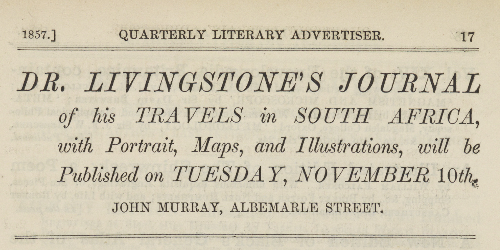
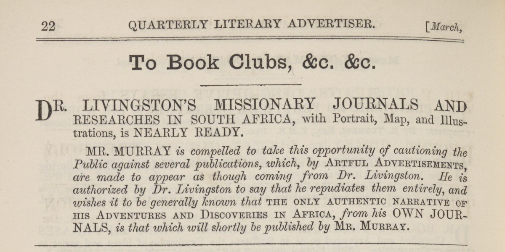
(Top) Trade Advert for Dr. Livingstone's Journal of his Travels in South Africa, Quarterly Review, 102 (July 1857-October 1857): September 1857, 17, detail. (Bottom) Trade Avert for Dr. Livingston's Missionary Journals And Researches in South Africa, Quarterly Review, 101 (January 1857-April 1857): March 1857, 22, detail. Copyright National Library of Scotland. Creative Commons Share-alike 2.5 UK: Scotland. John Murray heightened public anticipation for Livingstone's Missionary Travels by releasing regular trade adverts in the months preceding the book's publication. Since Livingstone took longer to complete the book than anticipated, Murray also used these adverts to retain public interest and to contest other publishers who took advantage of the delay by publishing "unofficial" narratives of Livingstone's travels.
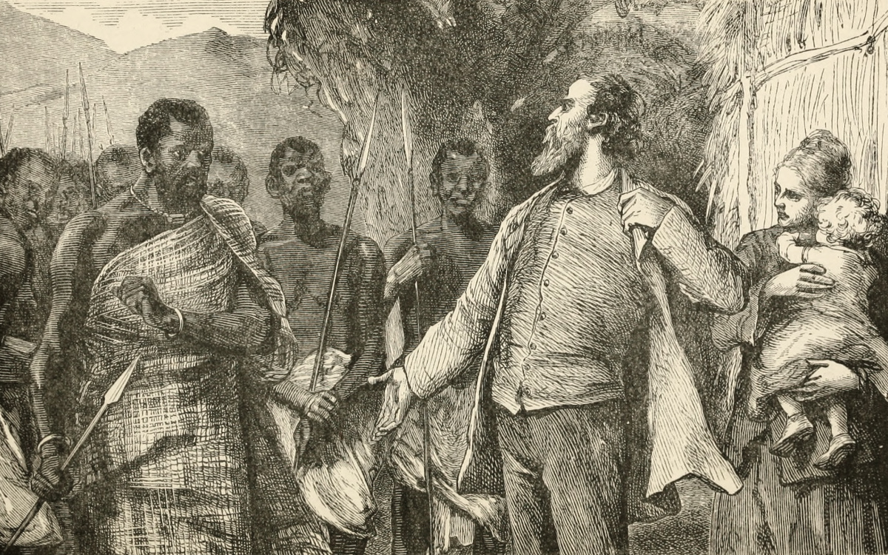
Now Then, If You Will, Drive Your Spears to My Heart. Illustration from David J. Deane, Robert Moffat the Missionary Hero of Kuruman, second edition (New York, Chicago: Fleming H. Revell, c.1880), 61. This image, which dramatises the dangers of intercultural encounter, highlights an established tradition of representing mission as a heroic enterprise; this tradition would contribute to the crafting of Livingstone's public persona.
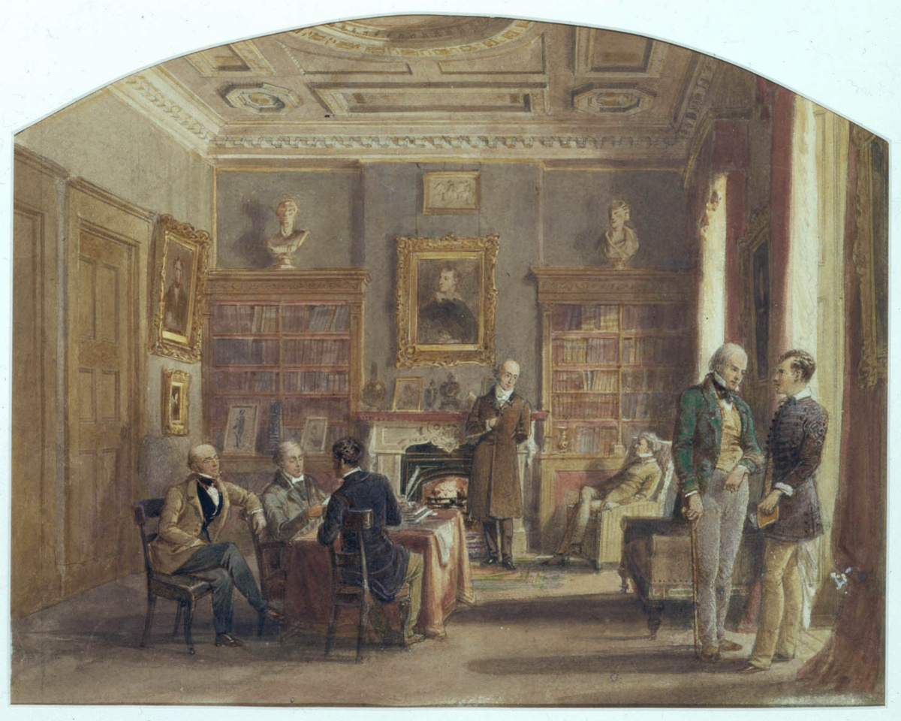
Lord Byron and Sir Walter Scott at No. 50 Albemarle Street, 1815. Painting by L. Werner (c.1850). Image copyright John R. Murray. Creative Commons Attribution-NonCommercial 3.0 Unported. From 1812 onward, the John Murray publishing house was based at 50 Albemarle Street in Mayfair, London. The drawing room, pictured above, was the firm’s social and intellectual centre. Livingstone was a regular visitor at this address in 1857 as he worked on Missionary Travels.
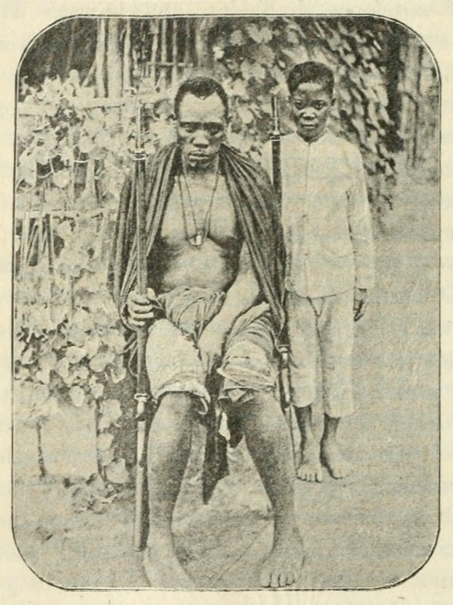
A Ma-kololo. Illustration from H. H. Johnston, Livingstone and the Exploration of Central Africa (London: George Philip & Son, 1891), 78. Courtesy of the Internet Archive. Although Livingstone’s transcontinental expedition was supported by the leader of the Makololo, Sekeletu, members of the Makololo rarely appear in illustrated or pictorial form in contemporaneous and posthumous Livingstone biographies. The photograph above represents a rare deviation from the general trend. However, Johnston's caption (“A Ma-kololo”) both ignores one of the individuals and presents the other as only a generic representative of the Makololo group as a whole, and so follows patterns of representation for non-European peoples that appear in many imperial-era works. The corresponding narrative text does not identify the two individuals or indicate if either travelled with Livingstone.
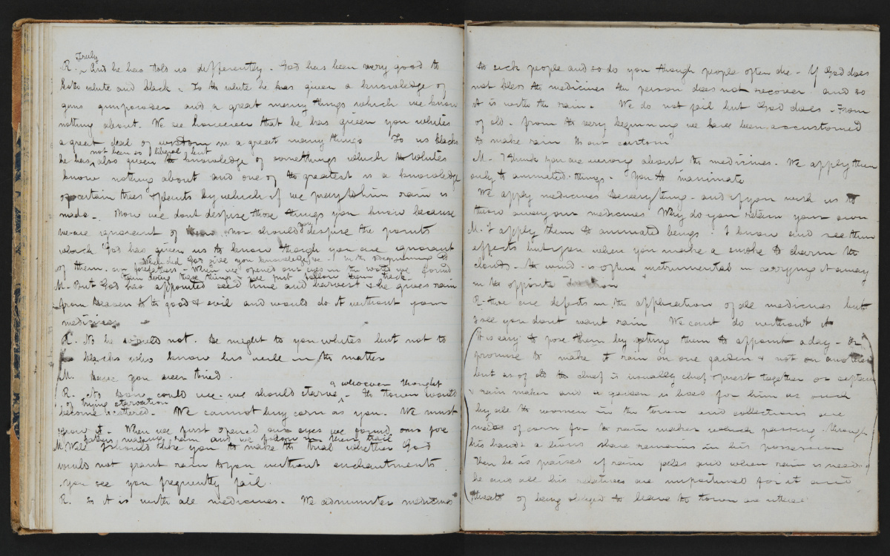
Notebook with Draft of Analysis of the Language of the Bechuanas and Other Miscellaneous Items (Livingstone 1850-52:[92]-[93]). Copyright David Livingstone Centre, Blantyre. As relevant, copyright Dr. Neil Imray Livingstone Wilson. Images of the Livingstone manuscripts from the David Livingstone Centre are copyright University of Glasgow Photographic Unit. Creative Commons Attribution-NonCommercial 3.0 Unported. In composing Missionary Travels, Livingstone returned to the notebooks and journals that he had kept during his first period in southern Africa (1841-56). The pages from this notebook contain an early draft of Livingstone’s famous dialogue with the rainmaker. This dialogue later appeared (with revisions) in Missionary Travels (see Livingstone 1857aa:23-25).
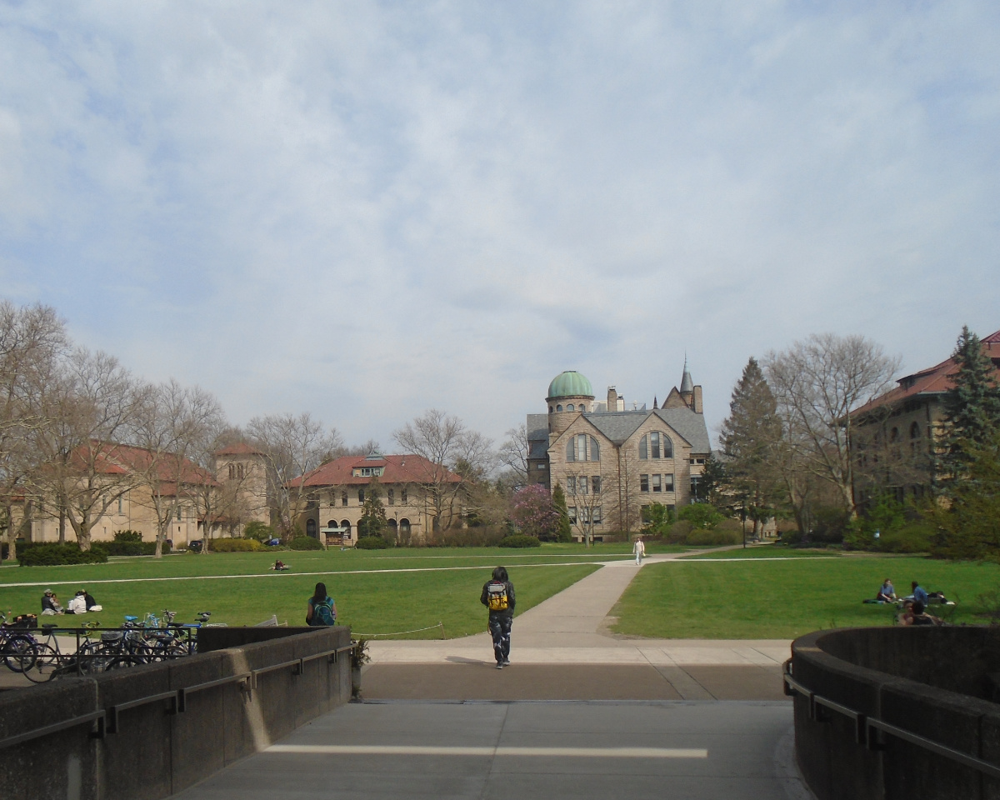
The view onto campus from the entryway of the Mudd Center, Oberlin College Library, Oberlin, Ohio, 2017. Copyright Kate Simpson. Creative Commons Attribution-NonCommercial 3.0 Unported. Charles Livingstone studied at Oberlin College in the 1840s. The college archives hold four volumes of a draft of Narrative of an Expedition to the Zambesi and its Tributaries. These volumes are written in Charles Livingstone’s hand and feature editorial corrections by David Livingstone, a composition format that resembles parts of the Missionary Travels manuscript.
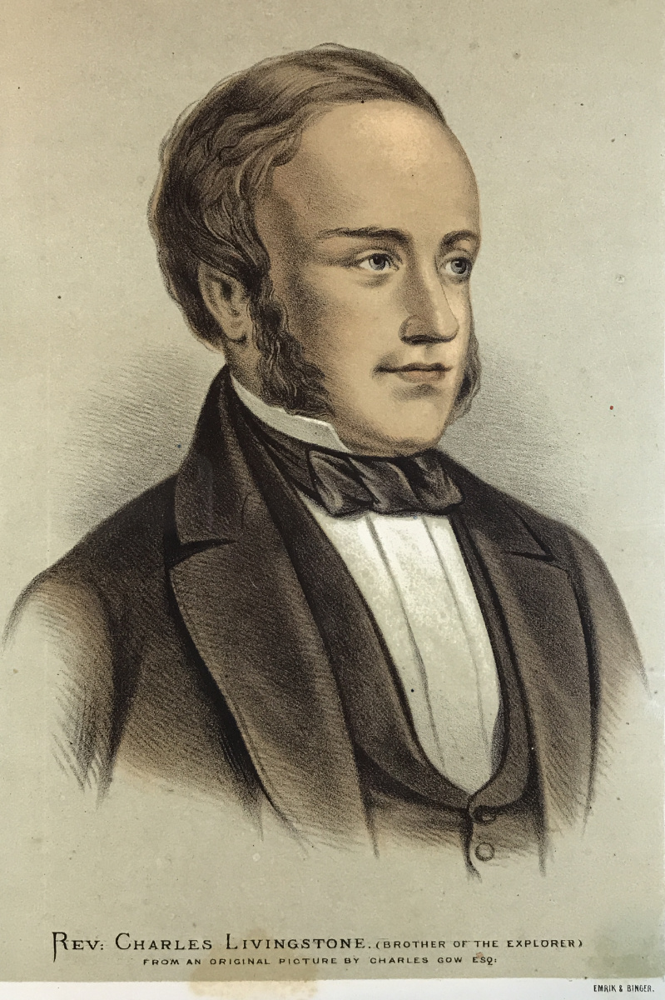
Portrait of the Rev. Charles Livingstone, Brother of the Explorer. From an Original Picture by Charles Gow, Esq. Illustration from James E. Ritchie, The Pictorial Edition of the Life and Discoveries of David Livingstone, 2 vols (London and Edinburgh: A Fullarton & Co., 1876-1879), 1:455. Copyright Adrian S. Wisnicki. Creative Commons Attribution-NonCommercial 3.0 Unported. Charles Livingstone assisted his brother’s work on Missionary Travels by acting as an amanuensis and critical editor. Later, Charles travelled to central Africa as a member of David Livingstone’s Zambezi Expedition and co-authored the resulting publication, Narrative of an Expedition to the Zambesi and its Tributaries (1865). That book – like Missionary Travels – was published by John Murray.
| 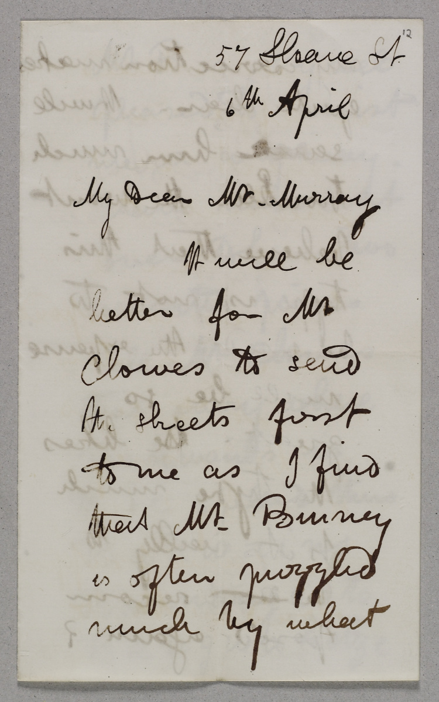 | 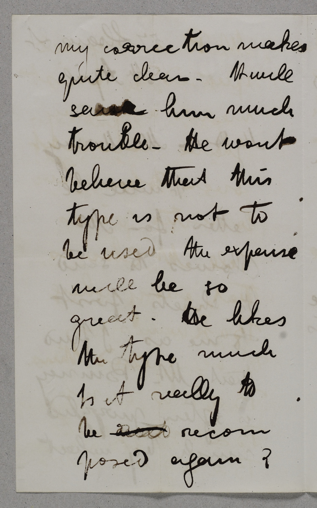 |
Letter to John Murray III (Livingstone 1857k:[1]-[2]). Copyright National Library of Scotland and Dr. Neil Imray Livingstone Wilson (as relevant). Creative Commons Share-alike 2.5 UK: Scotland. Livingstone wrote over forty letters to Murray in 1857 about the composition and publication of Missionary Travels. In the above sample, Livingstone acknowledges the assistance he is receiving from the Rev. Dr. Thomas Binney in revising the galley proofs of the forthcoming book.

Galley proof from Missionary Travels (Livingstone 1857dd:[1]). Copyright National Library of Scotland and Dr. Neil Imray Livingstone Wilson (as relevant). Creative Commons Share-alike 2.5 UK: Scotland. This printed “slip,” as Livingstone calls it, shows some minor editorial markup and a long arrow indicating where additional manuscript material should be inserted. Several additional pages of galley proofs survive in the Livingstone Museum, Zambia.
| 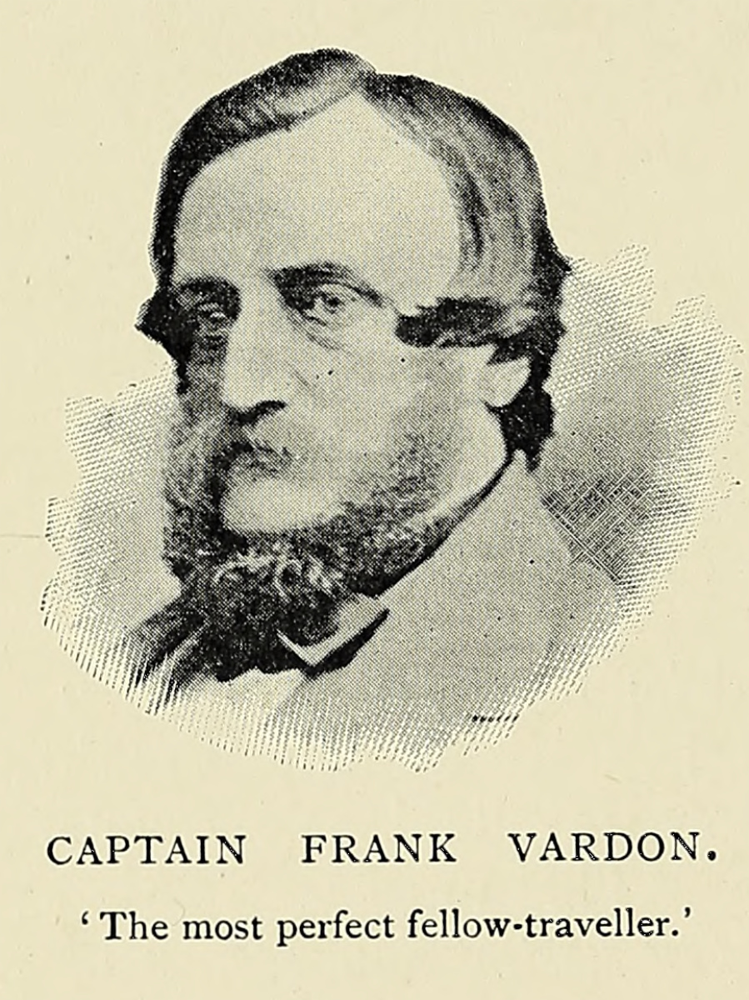 | 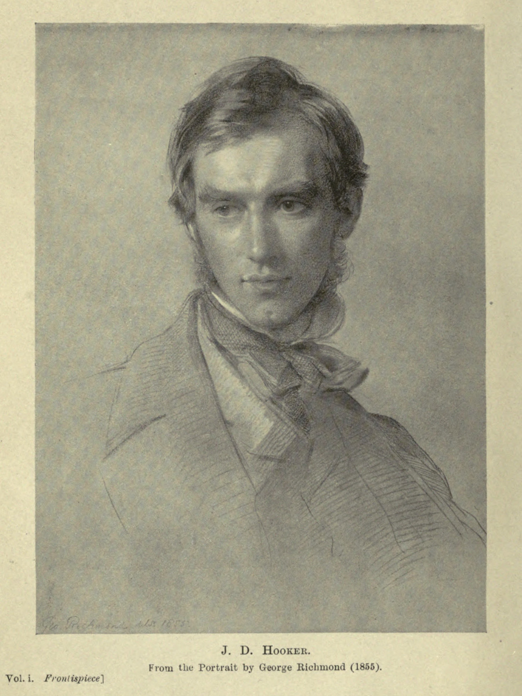 |
(Left; top in mobile) Captain Frank Vardon. Illustration from W. Edward Oswell, William Cotton Oswell: Hunter and Explorer, 2 vols (London: William Heinemann, 1900), 2:134. Courtesy of the Internet Archive. (Right; bottom) J. D. Hooker, From the Portrait by George Richmond (1855). Illustration from Leonard Huxley, Life and Letters of Sir Joseph Dalton Hooker O.M., G.C.S.I., 2 vols (London: John Murray, 1918), 1:frontispiece. Courtesy of the Internet Archive. Vardon and Hooker were two of the associates whose expertise Livingstone sought while working on Missionary Travels. Vardon had become acquainted with Livingstone during a southern African hunting trip to Mabotsa in 1846. Hooker corresponded with Livingstone from 1857 onward and later assisted in planning the Zambezi Expedition by providing a set of instructions and objectives for the expedition’s Economic Botanist.
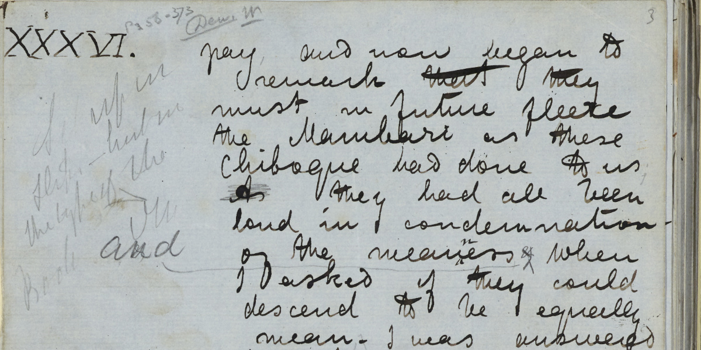
Image of a page segment from the Missionary Travels manuscript (Livingstone 1857dd:[4]), detail. Copyright National Library of Scotland and Dr. Neil Imray Livingstone Wilson (as relevant). Creative Commons Share-alike 2.5 UK: Scotland. This segment shows that the Missionary Travels galley proofs were not printed in a single step; rather, individual sections were set in type throughout the composition process, as and when they were ready. The pencil annotation at margin left, written in the hand of an unknown editor, provides an instruction for the current manuscript section (XXXVI) to be printed as galley proofs: “Set up in slips – but in the type of the Book.”